The first thing we need to do is to add a pivot to the connecting rod, this is 6' in front of the big-end which is our axis point. Draw a small cylinder at the right place, 6 or 12 sides & brought closer to the rod. Don't overlap the rod; it'll make it harder to delete later. In Gmax you must neutralise each part you draw, always go to 'Adjust Pivot' 'Affect Pivot Only' & set the 'Rotate' values to 0. They'll arrive with 0, +/- 90 all designed to confuse. Gmax will assume your X axis to be Y, Y to be Z; it'll get itself in a mess. You'll need loads of these pivots so clone from the one you've drawn. Place another at the small-end position. Make your conrod active & attach both cylinders to it. In TSM you'd 'Join Selected'. Run the animation to check that they are attached, run animation after each modification. Remember to save often, preferably save before animating then save with another name.
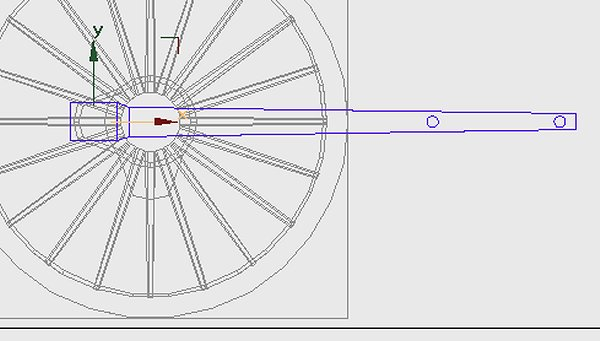
With this gear we can see that there's an anchor link, with a length of 3' 10", fixed to the frame. Let's introduce a couple of extra parts which are the core of this system. The locus for the moving pivot is obviously at a radius of 3' 10" so we introduce a cylinder of that radius, some arithmetic will give us the placement, the centre is 9' 8" forward of the wheel centre, 1' 1" above cylinder centres. The cylinder can be of as many sides as you wish, it won't be included in the model. In TSM there's a maximum of 32 sides, in point mode you could rotate points to be closer & give a smoother segment.
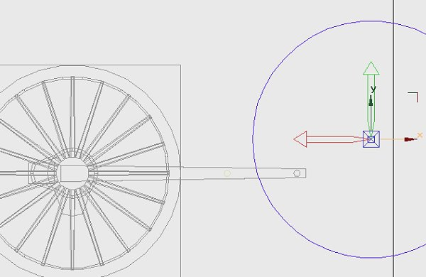
On the program we can see just one part attached to the rod - the coupler. Organise the pivots first, one of the cloned cylinders on the conrod pivot, one 5.5" from it, another 12" from that, if you just slide them along the same axis you'll have 3 in line. Make a box to enclose the 3 pivots, move it outboard of the connecting rod & neutralise the box. Now make the cylinder on the conrod pivot active & join both other pivots & the box to make one unit, name it coupler. The axis should be the first pivot. Link the coupler to the connecting rod. Try the animation, the coupler should move with the rod.
To animate the part; make the coupler active. Press 'Rotate' on the top toolbar, rotate the coupler until the outer pivot intersects the circle we introduced earlier. For large movements put the mouse over the part until the icon changes then drag it, for fine adjustment use the arrows by the windows on the bottom toolbar. Adjustment in Gmax is to the hundredth of a degree! It will be easier if we neutralise the part again. In TSM you can only drag the part or use the 'Transform' menu.
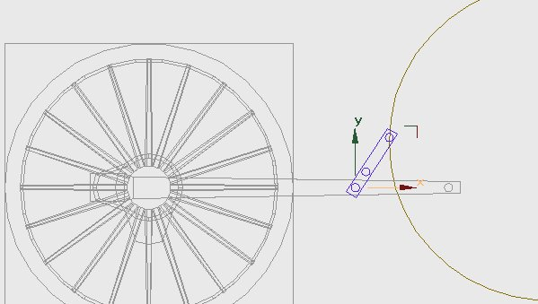
Press 'Animate' on the bottom bar, move the animation forward to frame 1, rotate the coupler to intersect, forward another frame through the cycle. Check the animation. The top pivot should be following the circle, the locus of the anchor link.
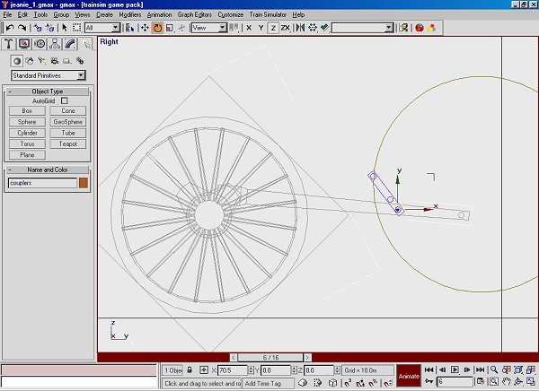
We can make the anchor link, clone the top pivot of the coupler in 'polygon' mode 'Detach as Clone'. Use the clone, without moving it, for the anchor link. On this prototype the link has a right angle turn so it's not just a simple box, remember to neutralise it - I can't emphasise this too many times. Attach the pivot then set the part axis to the centre of the circle. When we animate the part the trick is to have both pivots co-incident, set it close by dragging it then go in close & refine both parts using the nudge arrows. The anchor link has a most odd movement, it will be linked to 'main', not to any other part of the valve gear.
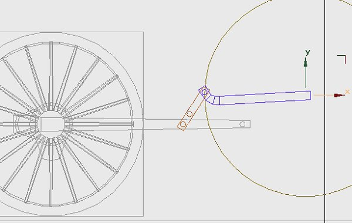
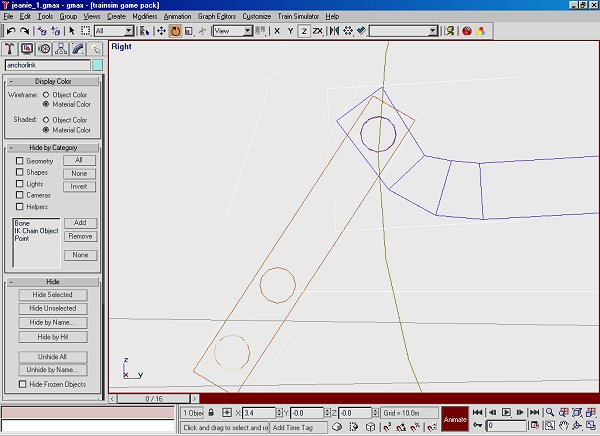
The valve gear drawing equates to frame 8 on my animation sequence, I imported wheels for this project. If I'd started from scratch I'd have had frame 0 the same as my drawing. The centre of the link isn't dimensioned; it appears to be vertically below the anchor link outer pivot. The middle pivot of the valve lever appears to be at the centre of the link when the crank is fully forward, in this case at animation frame 8. Draw the link, this will be a visual part so it has only 12 sides. The die slides in a channel in this block, run the valve gear program & look at the rotation at about 30 - 40% cut-off in forward gear. To emulate this channel draw a cylinder about 5' forward of the link centre, on the same height. I've trimmed off most of the polys leaving just a segment which is visible in side view. Join this to the link, then rotate the link so that the segment looks to be at the same angle as the program.
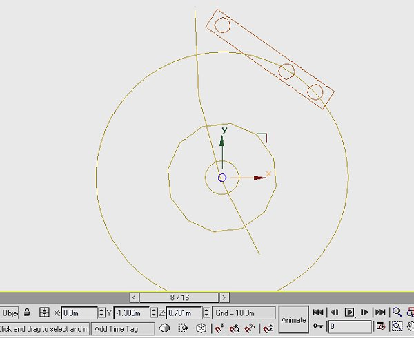
We'll do the next part of the modelling on frame 8. We need a valve lever; this has pivots on the centre of the link, another pivot at -2" & a top pivot at the middle of the coupler. This last dimension isn't given so a bit of schoolboy geometry is needed. Draw circles (cylinders) at the centre, another of 2" radius & the third to intersect the coupler. The centre cylinder can be used as a pivot, clone it & slide it to the 2" circle, another clone & slide it to the outside circle. It's clearer on the screen shot.
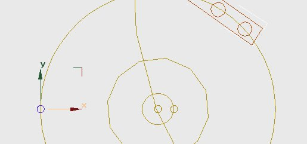
Draw a box for the valve lever, move it outwards. Make the middle pivot active & attach the other parts, rotate the lever about the middle pivot until the top pivot meets the middle pivot of the coupler.
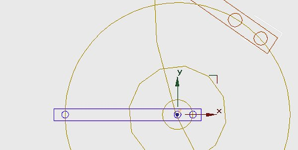
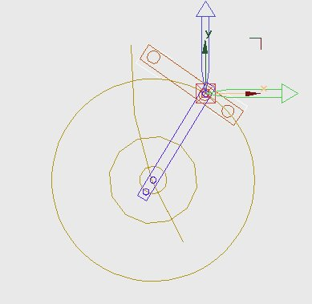
Move the axis to the top pivot & link the part to the coupler. Run the animation to check the link. To animate the lever rotate it until the middle pivot runs along the channel on the link. This part starts with some large movements so drag it first then go in close & fine tune the angle with the nudge buttons. In TSM you can move the 'Axis Only' in 'Transform', you'll need a bit of arithmetic first.
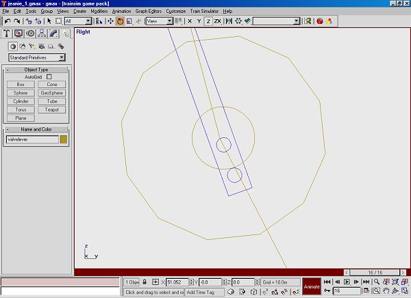
The next part to draw is the valve rod, the dimension for this is given as 9' 8". The rear end pivots about the bottom pivot of the valve lever, The valve chest end is connected to the valve spindle which will have just fore & aft movement. Make a box which will have both pivots. The axis for the part will be the rear pivot, link the part to the valve lever. The front guide will be the valve spindle, elongate this part so that the front of the valve rod appears to run along it. The valve spindle itself is animated by having it just touch the front pivot of the valve rod, it'll have lateral movement only. The crosshead can be joined to the spindle & will be linked to the 'main' part. You can animate with just a few parts showing on the screen. In all the gear animations I've drawn the last part to animate is the valve itself.
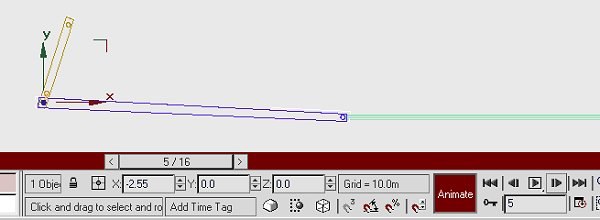
Unhide all the valve gear parts & see how well you've done!
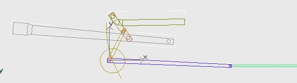
If you haven't already done so move the parts outwards to their proper positions. Make sure the first side is working well. Clone & copy all parts to the other side. They'll carry the animation information with them. If you haven't quartered wheels you could use them as they stand, removing hidden polygons from both sides. There might be a temptation to use them, calling frame 0 frame 4, if you've quartered wheels. My advice is DON'T, you'll get tied in knots; it's much easier to cancel the animation - make all rotation values 0. Move the animation sequence to the appropriate frame then animate from scratch. Keep all the pivots in place until you're happy with the gear, then delete them from all parts. None of the jigs & dummy circles will be needed on the model. Either delete them or just make sure they're not linked to the 'main' part. In TSM you'll have to delete them. Steam locomotives look far better with wheels quartered as per prototype, well worth the extra effort.